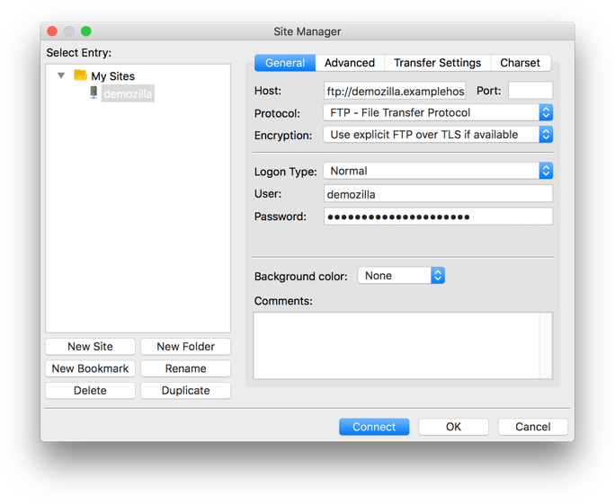
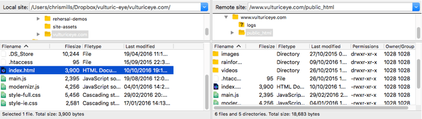
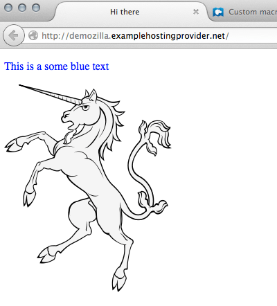

This article shows you how to publish your site online using file transfer tools.
| Prerequisites: | You must know what a web server is and how domain names work. You must also know how to set up a basic environment and how to write a simple webpage. |
|---|---|
| Objective: | Learn how to push files to a server using the various file transfer tools available. |
If you have built a simple web page (see HTML basics for an example), you will probably want to put it online, on a web server. In this article we'll discuss how to do that, using various available options such as SFTP clients, RSync and GitHub.
There are several SFTP clients out there. Our demo covers FileZilla, since it's free and available for Windows, macOS and Linux. To install FileZilla go to the FileZilla downloads page, click the big Download button, then install from the installer file in the usual way.
Note: Of course there are lots of other options. See Publishing tools for more information.
Open the FileZilla application; you should see something like this:
For this example, we'll suppose that our hosting provider (the service that will host our HTTP web server) is a fictitious company "Example Hosting Provider" whose URLs look like this: mypersonalwebsite.examplehostingprovider.net.
We have just opened an account and received this info from them:
Congratulations for opening an account at Example Hosting Provider.
Your account is:
demozillaYour website will be visible at
demozilla.examplehostingprovider.netTo publish to this account, please connect through SFTP with the following credentials:
- SFTP server:
sftp://demozilla.examplehostingprovider.net- Username:
demozilla- Password:
quickbrownfox- Port:
5548- To publish on the web, put your files into the
Public/htdocsdirectory.
Let's first look at http://demozilla.examplehostingprovider.net/ — as you can see, so far there is nothing there:

Note: Depending on your hosting provider, most of the time you'll see a page saying something like “This website is hosted by [Hosting Service].” when you first go to your web address.
To connect your SFTP client to the distant server, follow these steps:
Your window should look something like this:

Now press Connect to connect to the SFTP server.
Note: Make sure your hosting provider offers SFTP (Secure FTP) connection to your hosting space. FTP is inherently insecure, and you shouldn't use it.
Once connected, your screen should look something like this (we've connected to an example of our own to give you an idea):

Let's examine what you're seeing:
mdn).users/demozilla)Our example host instructions told us "To publish on the web, put your files into the Public/htdocs directory." You need to navigate to the specified directory in your right pane. This directory is effectively the root of your website — where your index.html file and other assets will go.
Once you've found the correct remote directory to put your files in, to upload your files to the server you need to drag-and-drop them from the left pane to the right pane.
So far, so good, but are the files really online? You can double-check by going back to your website (e.g. http://demozilla.examplehostingprovider.net/) in your browser:

And voilà! Our website is live!
{{Glossary("Rsync")}} is a local-to-remote file synchronizing tool, which is generally available on most Unix-based systems (like macOS and Linux), but Windows versions exist too.
It is seen as a more advanced tool than SFTP, because by default it is used on the command line. A basic command looks like this:
rsync [-options] SOURCE user@x.x.x.x:DESTINATION
-options is a dash followed by a one or more letters, for example -v for verbose error messages, and -b to make backups. You can see the full list at the rsync man page (search for "Options summary").SOURCE is the path to the local file or directory that you want to copy files over from.user@ is the credentials of the user on the remote server you want to copy files over to.x.x.x.x is the IP address of the remote server.DESTINATION is the path to the location you want to copy your directory or files to on the remote server.You'd need to get such details from your hosting provider.
For more information and further examples, see How to Use Rsync to Copy/Sync Files Between Servers.
Of course, it is a good idea to use a secure connection, as with FTP. In the case of Rsync, you specify SSH details to make the connection over SSH, using the -e option. For example:
rsync [-options] -e "ssh [SSH DETAILS GO HERE]" SOURCE user@x.x.x.x:DESTINATION
You can find more details of what is needed at How To Copy Files With Rsync Over SSH.
GUI tools are available for Rsync (for those who are not as comfortable with using the command line). Acrosync is one such tool, and it is available for Windows and macOS.
Again, you would have to get the connection credentials from your hosting provider, but this way you'd have a GUI to enter them in.
GitHub allows you to publish websites via GitHub pages (gh-pages).
We've covered the basics of using this in the Publishing your website article from our Getting started with the Web guide, so we aren't going to repeat it all here.
However, it is worth knowing that you can also host a website on GitHub, but use a custom domain with it. See Using a custom domain with GitHub Pages for a detailed guide.
The FTP protocol is one well-known method for publishing a website, but not the only one. Here are a few other possibilities: